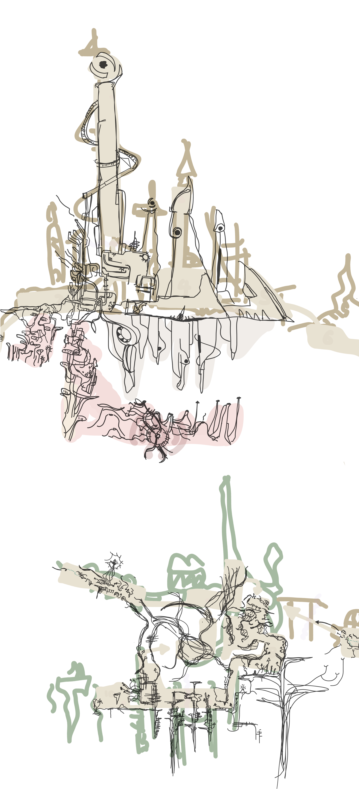

A compact mobile doorway into CC Lab works, Advanced CC studies, and small experimental tools.
Course paths
Works
Little doors
Try
Advanced CC
Thanks
This year's course helped me learn practical skills around HTML, CSS, JavaScript, and API-based projects. I am grateful to Matías Piña Aguilera for his continuous support and guidance.

Welcome from Muyi
Welcome to the CC Lab Final homepage. This is a demonstration page that shows all my works in Critical Computation classes.
This website mainly summarizes all the P5JS tasks I completed last year (almost the year before). I divided them into two parts on average, corresponding to last year's CC and this year's Advanced-CC. CC showcases five works of various sizes and scopes that I completed using P5JS over a period last year, hoping that the new content this year can further enhance my programming skills.
The tasks related to CC-Lab have been a year ago. I learned a lot back then. I had a basic understanding of P5JS and HTML (now I've almost forgotten everything). The content back then was divided into five chapters, corresponding to five works. I don't remember the specific details, but I luckily saved a lot of content, and there will be more information on the subpages.
little doors to try
The work related to Advanced CC comes from this year's course. I learned a lot through the class, especially many practical skills around HTML, CSS, JavaScript, and API-based projects. I am also grateful to Matías Piña Aguilera for his continuous support, guidance, and encouragement throughout the semester.